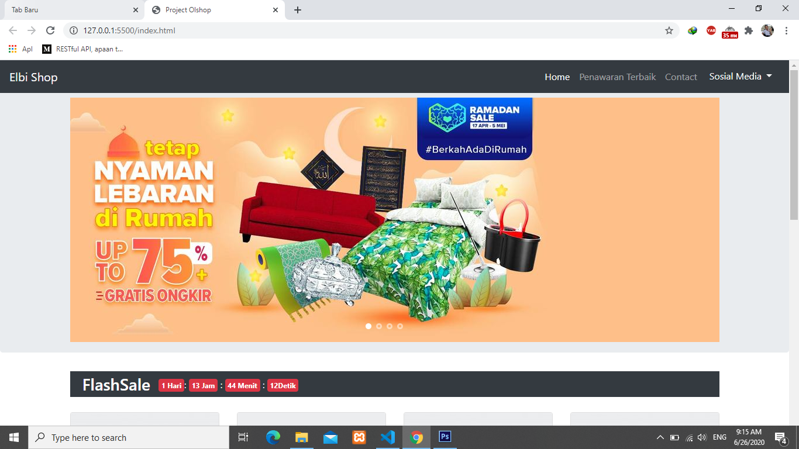

Halo!!!
My name is Rhafael Bijaksana, I'm from Indonesian and I'm 17 years old. I am a frontend developer. I really like challenges and new things that I can learn. I really like the world of technology and the world of programming.
The frontEnd skills that I master include html, css, javascript, bootstrap
Backend skills that I mastered include ExpressJs, NodeJs, Mysql
Other skills that I master include Git
My hobbies include playing badminton, futsal, music, games
The picture on the side is the initial display of the results of the website that I am working on, takes about 2 weeks, the programming language & framework that I use is Javascipt and Bootstrap
The picture on the side is the initial display of the results of the employee data processing website that I worked on, it took about 2 weeks, the programming language & framework that I used was Javascipt, Bootstrap, Node Js, Mysql


